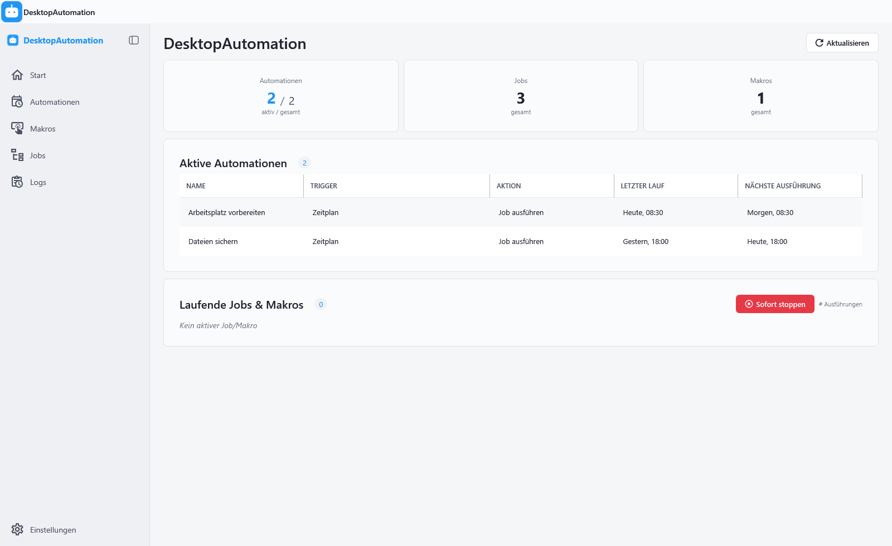

Unterlagen passend vorbereiten.
Wähle Rechnungen oder Notizen. Der passende Zweig kopiert die Unterlagen, öffnet den Editor und reicht deine Auswahl weiter.
Ablauf ansehenDateien sichern, Programme öffnen oder Eingaben wiederholen. Verbinde Aktionen zu visuellen Jobs, zeichne Makros auf und starte deine Abläufe nach Zeitplan.
Windows 10 / 11 · 64 Bit

Diese Beispiele zeigen unterschiedliche Möglichkeiten.
Mit Bedingungen, Datenfluss und passenden Automationen.
Wähle Rechnungen oder Notizen. Der passende Zweig kopiert die Unterlagen, öffnet den Editor und reicht deine Auswahl weiter.
Ablauf ansehenEin Ordner-Ereignis startet eine Rückfrage. Nach Bestätigung sichert der Job zwei Ordner; alternativ meldet er die übersprungene Sicherung.
Ablauf ansehenPrüfe zuerst, ob der Editor läuft. Starte ihn bei Bedarf, öffne den Rechner und schließe den Ablauf mit einer Rückmeldung ab.
Ablauf ansehenMakrosMaus- und Tastatureingaben aufzeichnen und bearbeiten.
AutomationenJobs über Zeitpläne und Ereignisse starten.
ErweiterungenSkripte, Bedingungen sowie Bild- und Texterkennung einbinden.
Entdecke Jobs, Makros, Automationen und den Verlauf in echten Ansichten der Anwendung.
Installer, Einrichtung und passende Beispiele findest du auf der Downloadseite.
Windows 10 / 11 · 64 Bit